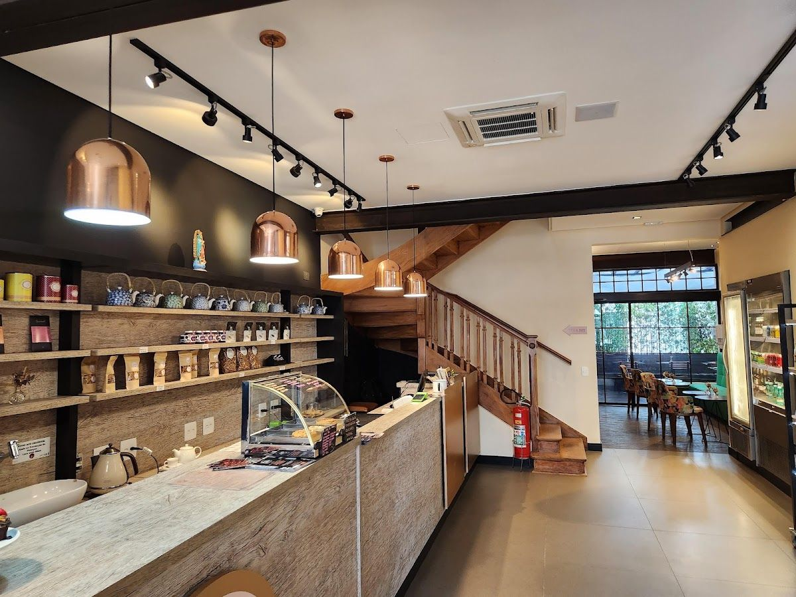
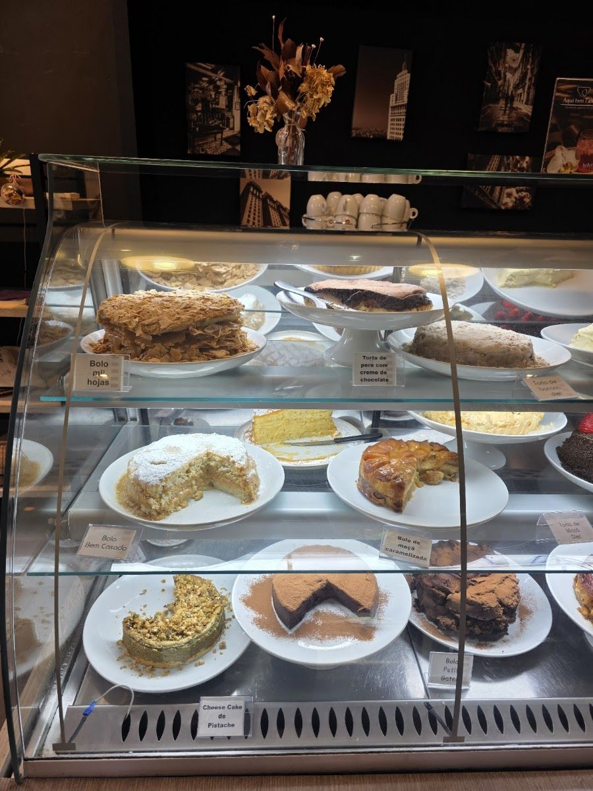
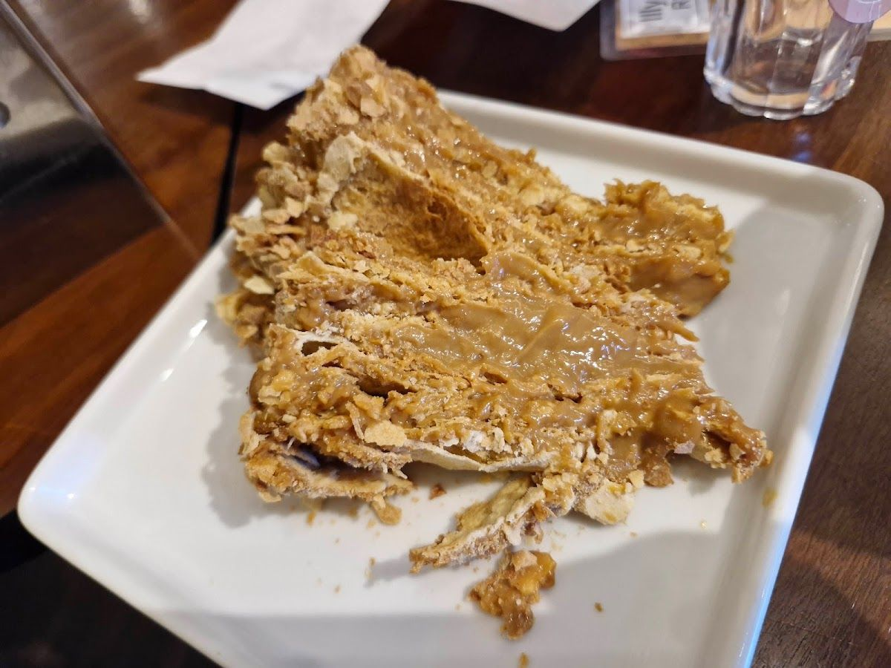
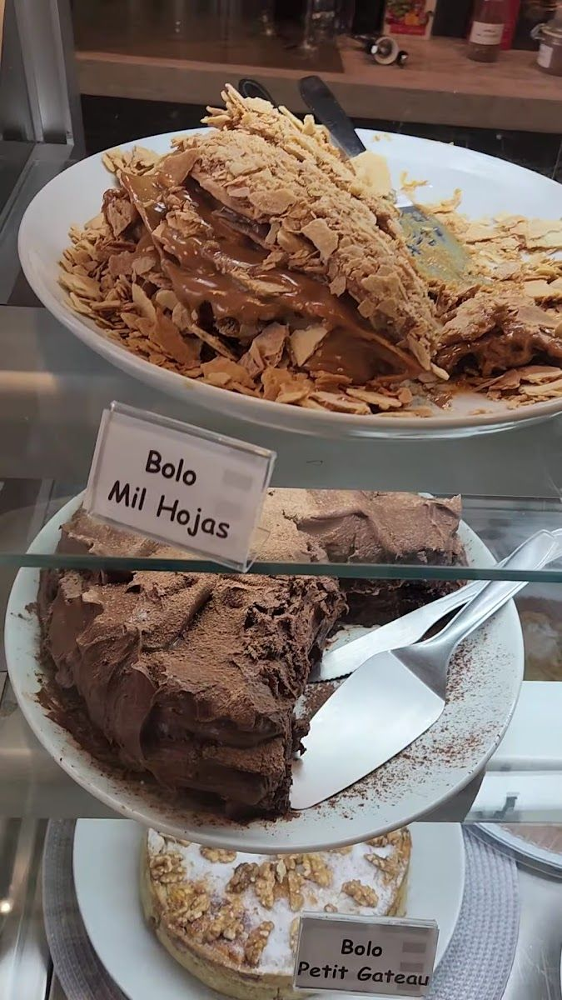
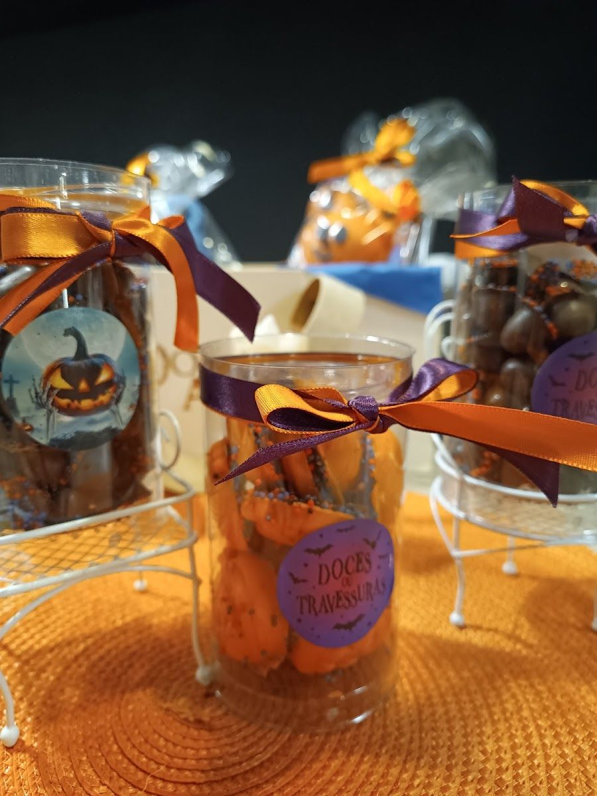

Cafeteria · Restaurante · Empório · Higienópolis
Café, doces e boa mesa em Higienópolis
Há três décadas, a Doce Arte recebe o bairro com bolos, tortas, salgados e um café feito com cuidado. Do café da manhã ao café da tarde, é um lugar para sentar sem pressa — ou levar um pouco de tudo para casa.
- Há 30 anos
- Bolos, tortas e salgados
- R. Bahia, 480 · Higienópolis
Sobre
Sobre a Doce Arte
A Doce Arte é cafeteria, restaurante e empório em Higienópolis, na Rua Bahia. Há três décadas, a casa se dedica aos bolos, tortas, sobremesas e salgados, e serve em sua unidade café da manhã, brunch, almoço e café da tarde. No empório, você encontra produtos especiais para levar para casa ou presentear. A Doce Arte também atende festas e eventos e oferece congelados, para que o sabor da casa acompanhe você além da mesa.
Gastronomia, doceria e eventos — com o cuidado de sempre.
Destaques
O que você encontra na Doce Arte

Bolos, tortas e salgados
A especialidade da casa: bolos, tortas, sobremesas e salgados, para a pausa do dia ou para uma ocasião especial.

Do café da manhã ao café da tarde
Café da manhã, brunch, almoço e café da tarde, servidos no salão.

Empório
Produtos especiais selecionados, para levar para casa ou presentear.

Festas, eventos e congelados
A Doce Arte também atende festas e eventos e oferece congelados. Consulte as opções pelo WhatsApp.
Pedidos
Na mesa, para levar ou em casa
Venha à Doce Arte para tomar um café com calma, ou fale com a gente pelo WhatsApp para tirar dúvidas, consultar o cardápio e combinar o seu pedido. Para receber em casa, a Doce Arte também está no iFood.
Como pedir
- Chame no WhatsApp (11) 96060-9022.
- Conte o que você procura — café, doces, salgados, congelados ou um evento.
- Combine os detalhes do pedido com a equipe.
- Entrega própria, retirada, encomendas, festas e pagamento
- Consulte pelo WhatsApp
4,6 no Google · 138 avaliações
Conte como foi a sua visita
Já passou pela Doce Arte? Sua avaliação no Google ajuda outras pessoas a nos conhecer e nos ajuda a receber cada vez melhor.
Avaliar no GoogleContato
Onde estamos
Horário
Fale com a gente
- WhatsApp / telefone: (11) 96060-9022 · Ligar
- Instagram: @docearte_higienopolis
- Pedidos on-line: iFood
Uma pausa para o café?
Bolos, tortas, salgados e um café feito com cuidado, na Rua Bahia, em Higienópolis. Fale com a Doce Arte pelo WhatsApp.